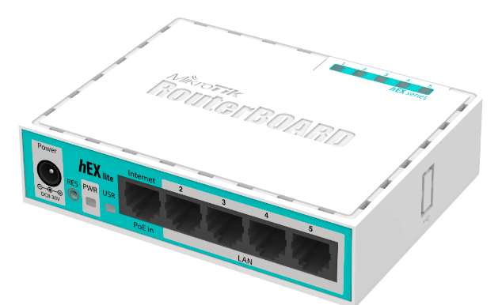
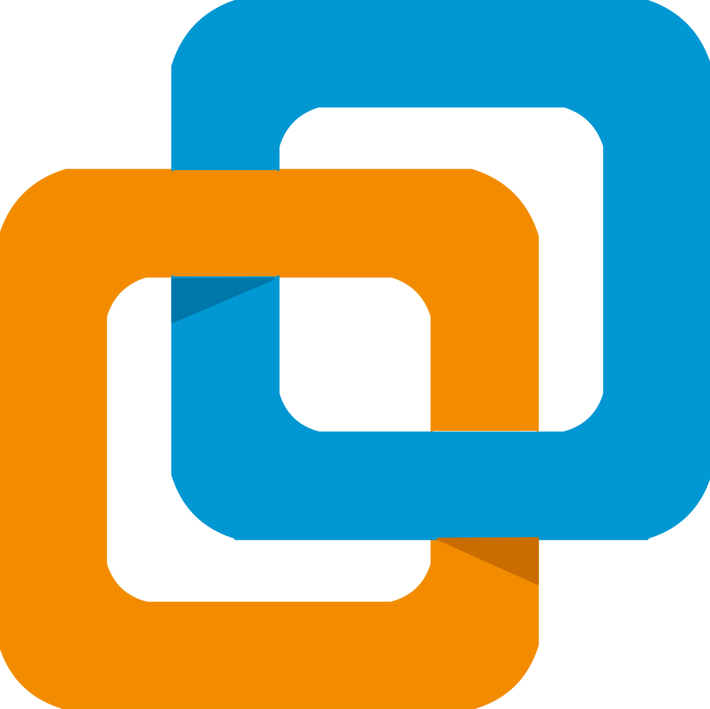
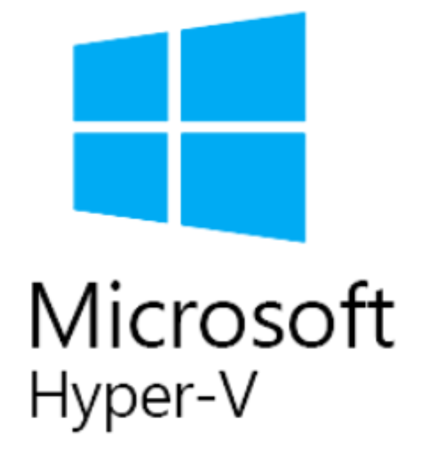
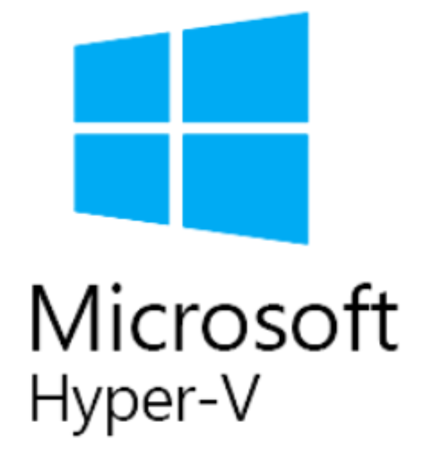
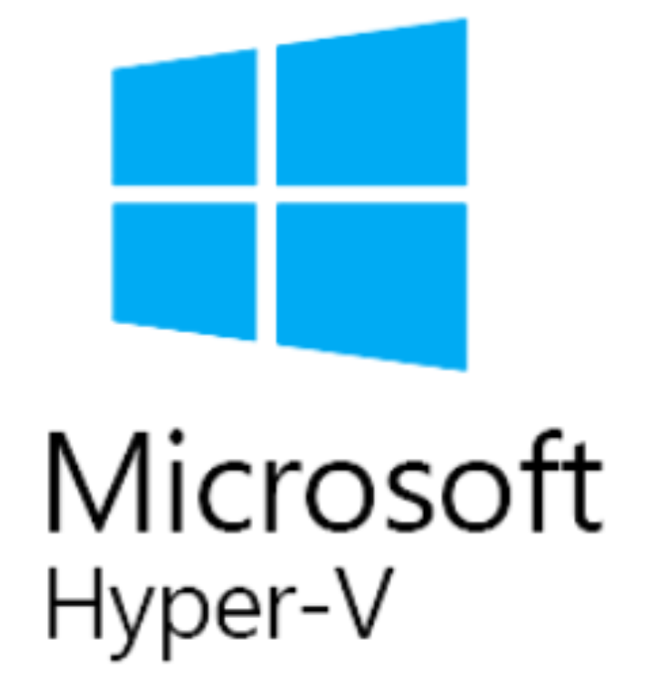

Mikrotik virtual
Ten el software RouterOS de Mikrotik en una máquina virtual y conecta tus demás VMs con él

 



Compatible con todo
No hay que instalar nada: descarga e importa en tu hipervisor o programa
Conecta todo
Añade todas las interfaces que desees, y crea redes virtuales entre tus VM